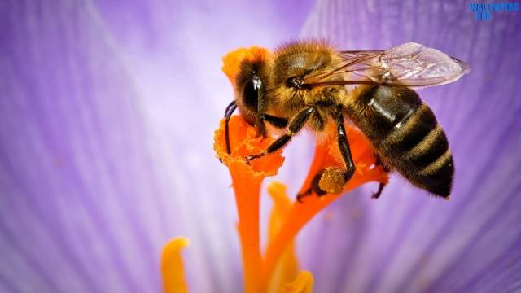

How can technology help bees?
Why are bees so important?
- 1.4 billion farming jobs and three-quarters of the worlds food rely on the pollonation of crops
- Out of the 100 crops which feed 90% of the population 70 are pollonated by bees



Tech firms are beginning to implement technolgy into hives which allow beekeepers to monitor the state of their hives, aiming to reduce losses and improve bee health One ireland based tech firm ApisProtect has launched a sensor that alerts beekeepers if there is a problem in their hives. The small sensor is internet connected and placed under the roof of the beehive, it measures a number of metrics including temprature, humidity, sound and movement. The data is sent via the cloud to ApisProtect's HQ where the data is proccessed, analyzed and then sent back to the beekeeper.
More info